Ceux qui me connaissent le savent, j’adore les blogs. J’en ai eu près d’une dizaine qui n’ont jamais tenu plus de quelques mois. Je manquais certainement d’inspiration ou de motivation. Mais la plupart du temps, je me sentais bridée par les plateformes de blog que j’utilisais.
Il y quelques semaines, je suis tombée par hasard sur un podcast nommé Toolsday. Dans un épisode, Una Kravets, spécialiste de développement front-end et de design, évoque la récente refonte de son blog. Elle raconte comment et pourquoi elle a choisi Eleventy, un outil émergeant du web.
Son expérience a piqué ma curiosité. J’ai commencé à faire des recherches sur le sujet. Petit à petit, mon envie de créer un blog de zéro s'est réveillée.
Je rêvais d’une technologie simple, élégante et personnalisable avec juste ce qu’il faut de challenge. Et vous savez quoi ? J’ai enfin trouvé la perle rare.
Mettre au point ce blog n'a pas été simple au départ, comme c'est souvent le cas quand on découvre un nouvel outil. J'ai néanmoins pris du plaisir à le développer et j'ai beaucoup appris en cours de route. Pour mon premier article, j'aimerais partager cela avec vous. Qui sait ? Peut-être que cela vous donnera aussi envie de créer votre blog avec Eleventy.
Sommaire
- Eleventy, c'est quoi ?
- Pourquoi choisir un générateur de site statique ?
- Installer Eleventy
- Créer un article
- Construire un template
- Créer une page d’accueil
- Appliquer du style
- Relier des templates entre eux
- Ajouter une image à la une aux articles
Eleventy, c’est quoi ?
Commençons par le commencement. Eleventy, ou 11ty pour les intimes, est un générateur de site statique né en 2018 et créé avec JavaScript. Il existe beaucoup de générateurs de site statique. Parmi les plus connus, on peut citer Gatsby, Next.js et Jekyll.
Leur fonctionnement est simple. Ils compilent des templates et des contenus pour générer des pages web reliées entre elles et donc, un site.
De la même manière que les CMS, ils permettent donc de gérer séparément l’aspect graphique et les contenus. Cependant, ils ne font pas (ou presque pas) appel à des langages de scripts côté serveur et n’utilisent pas de base de données.

C’est à peu près comment mon moi du passé a réagi en faisant cette découverte.
Les générateurs de site statique sont souvent utilisés pour créer des blogs. Ils sont le compromis idéal entre un site statique codé "à la main" et un CMS.
Pourquoi choisir un générateur de site statique ?
Des temps de chargement plus rapides
Les sites statiques ne vont pas chercher de l’information de façon dynamique dans une base de données. Ils permettent donc de gagner de précieuses secondes.
Plus de sécurité
Les générateurs de site statique n'ont pas ou peu de lien avec des infrastructures côté serveur. Ils courent de ce fait moins de risques liés à la sécurité. Dans la plupart des cas, il n’y a pas non plus de tableau de bord avec des accès administrateurs à sécuriser.
La liberté
Il est vrai que les générateurs de site statique demandent plus de compétences techniques que les CMS. Mais c’est en quelque sorte le prix de la liberté. La personnalisation est sans limite avec les langages de programmation au cœur des générateurs.
Installer Eleventy
Avant de commencer, il est nécessaire de s’assurer d’avoir Node installé sur son ordinateur. Pour cela, ouvrez votre Terminal (Mac) ou votre Invite de commande (Windows). Tapez et exécutez la commande suivante :
node -- version
Eleventy a besoin de Node 8 ou plus pour fonctionner. Si vous n’avez pas la bonne version, rendez-vous sur le site de Node pour la télécharger.
Pour installer Eleventy, exécutez la commande suivante :
npm install -g @11ty/eleventy
Créer un article
Créez un nouveau dossier pour votre projet, soit en utilisant l’interface utilisateur, soit en ligne de commande. Utilisez cd pour vous déplacer dans vos dossiers et mkdir pour un créer un à l'emplacement choisi.
Dans votre nouveau dossier, créez votre premier article en langage Markdown : blog-post.md. Editez l’article en y ajoutant le code suivant :
# Le titre de mon 1er post
Hello World!
Maintenant, lancez Eleventy (en vous plaçant toujours dans le dossier de votre projet) en exécutant la commande suivante :
eleventy
Le terminal vous répondra quelque chose du genre :
Writing _site/blog-post/index.html from ./blog-post.md.
Wrote 1 file in 2.45 seconds (v0.11.0)
Si vous retournez dans votre dossier de projet, vous verrez qu’Eleventy y a créé un nouveau dossier _site. A l’intérieur, vous trouverez un dossier blog-post contenant une page index.html. Ouvrez-là dans votre éditeur de code :
<h1>Le titre de mon premier post</h1>
<p>Hello World!</p>
Eleventy a transformé du Markdown en HTML ! Génial non ?
A ce stade, vous êtes peut-être en train de vous demander à quoi ça sert de transformer des fichiers comme cela. Est-ce qu’il ne serait pas plus simple d’écrire directement nos articles en HTML ?
L'avantage du Markdown, c’est sa simplicité. On peut le lire ou l’écrire en l’état, sans avoir à déchiffrer le balisage. C'est l'idéal pour rédiger des articles de blog. Si vous découvrez ici le Markdown, je vous recommande ce guide pour vous familiriser avec la syntaxe.
Revenons à notre article qu’Eleventy a transformé en HTML. Nous avons bien des balises <h1> et <p> correspondant à notre titre et à notre paragraphe. Cependant, ce fichier HTML n’est pas valide en l’état.
Construire un template
Dans l’idéal, nous aimerions rendre nos articles valides sans avoir à y réécrire à chaque fois les balises HTML de base. C’est là que les templates entrent en jeu.
Dans votre projet, créez un dossier _includes. A l’intérieur de celui-ci, créez un fichier base.njk en langage de templating Nunjucks. Dans ce fichier, nous allons construire le template de nos articles :
Note : les variables en Nunjucks sont interprétées par les templates même dans des balises <code>. Il m'est donc impossible de fournir du code contenant des variables. Certaines étapes de ce tutoriel seront donc illustrées avec des images. Je suis preneuse d'astuces permettant de contourner cela. Merci !
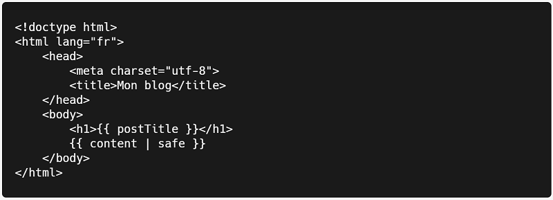
En Nunjucks, les éléments entre accolades représentent des variables. Ils permettent de récupérer des contenus provenant d'autres fichiers.
Ensuite, au début de votre article, intégrez le code suivant :
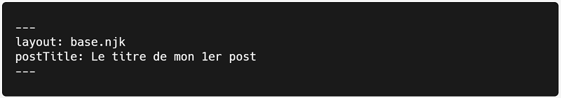
Ce bout de code indique à Eleventy que cet article doit être compilé avec le template post.njk.
Vous pouvez supprimer votre titre # Le titre de mon 1er post présent dans le corps du texte. Le titre de l’article est désormais stocké dans la variable postTitle. Il pourra ainsi être affiché dans le template entre les balises <h1>.
Les éléments entre les --- sont appelés YAML Front Matter. C'est un moyen de passer des informations au template au moment de la compilation.
Sauvegardez et relancez la commande eleventy dans votre Terminal. Regardez le résultat sous _site/blog-post/index.html :
<!doctype html>
<html lang="fr">
<head>
<meta charset="utf-8">
<title>Mon blog</title>
</head>
<body>
<h1>Le titre de mon 1er post</h1>
<p>Hello World!</p>
</body>
</html>
Cette fois ça y est, nous avons une page HTML valide !
Créer une page d’accueil
Un blog avec un seul article, c’est un peu triste. Créez un deuxième article blog-post2.md :
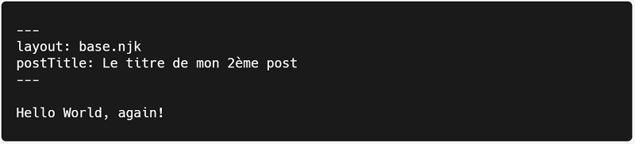
Pour avoir un blog digne de ce nom, il nous faudrait également une page d'accueil listant tous nos articles.
Commençons par créer un dossier posts pour y ranger tous nos articles. Dans ce dossier posts, créez un fichier posts.json. Vous pourrez y écrire des informations qui s'appliqueront à tous les articles. Par exemple, nous pouvons demander à Eleventy de compiler les articles avec le template base.njk. Dans votre fichier posts/posts.json, intégrez le code suivant :
{
"layout": "base.njk"
}
Par conséquent, dans nos articles, nous n’avons plus besoin de préciser layout: post.njk dans le front matter. Nous avons toutefois toujours besoin de leur donner un titre :
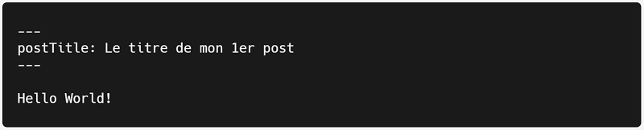
Pour lister tous nos articles sur la page d’accueil, il faut indiquer à Eleventy de les regrouper. Pour cela, nous avons besoin de ce que l’on appelle une "collection".
Dans votre fichier posts/posts.json, ajoutez un array tags pour stocker tous les articles :
{
"layout": "base.njk",
"tags": ["posts"]
}
Nous pouvons maintenant créer une page d’accueil. À la racine du projet, créez un fichier index.html comme suit :
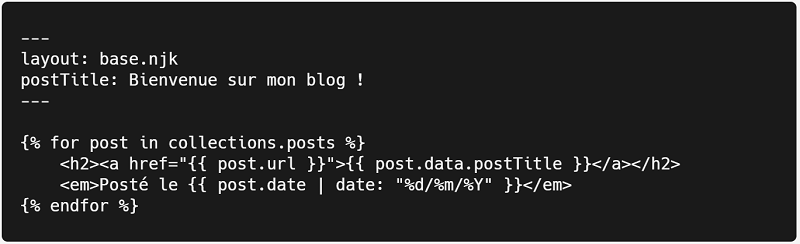
Retournez dans votre terminal et cette fois-ci, exécutez la commande suivante :
eleventy --serve
Vous venez de lancer un serveur local. Il se rafraîchit automatiquement quand vous sauvegardez. Votre blog est désormais visible à l’adresse http://localhost:8080.
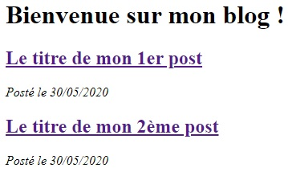
Appliquer du style
En l’état, notre blog n’a rien de très glamour. Pour le personnaliser, créez un fichier CSS style.css à la racine du projet. Admettons que nous souhaitons avoir une couleur de fond rouge. Dans le fichier style.css, écrivez le code suivant :
body {
background-color: red;
}
Ajoutez votre feuille de style au template base.njk en ajoutant la ligne suivante dans le <head> :
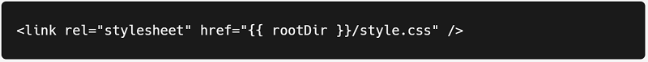
Sauvegardez et observez les changements dans le navigateur. Le style ne s’applique pas.
Eleventy ne semble pas avoir copié style.css dans le dossier _site au moment de compiler. En fait, il est nécessaire de lui indiquer les extensions de fichiers et les dossiers qu’il doit copier.
Créez un fichier .eleventy.js à la racine du projet et intégrez-y le code suivant :
module.exports = function(eleventyConfig) {
eleventyConfig.setTemplateFormats([
"njk",
"md",
"html",
"css"
]);
eleventyConfig.addPassthroughCopy('images');
};
Nous lui demandons de copier tous les fichiers Nunjucks, Markdown, HTML et CSS. Il copiera également le dossier images dans lequel nous rangerons nos visuels. On appelle cela le "passthrough".
Note : il est parfois nécessaire de relancer Eleventy après avoir modifié le passthrough.
Dans le navigateur, cette fois le style s’applique bien, notre background est rouge.
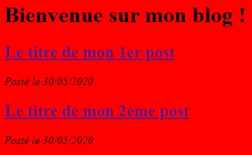
Relier des templates entre eux
Sur mon blog, j’utilise 3 templates :
home.njkpour la page d’accueilpost.njkpour les articlesbase.njkpour structurer l’ensemble du blog
Cela me permet d'avoir un affichage différent sur la page d’accueil et sur les articles. Consultez la documentation d'Eleventy pour en savoir plus sur le layout chaining.
Essayons de faire de même. Commencez par créer 2 nouveaux templates, home.njk et post.njk dans le dossier _includes. Ajoutez-y le code suivant :
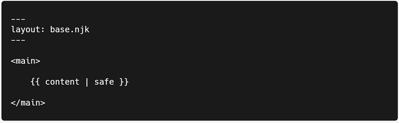
Dans le front matter, nous indiquons à Eleventy que ces templates se basent sur le template base.njk.
Retournez maintenant dans le fichier index.html à la racine du projet. Il s’agit du fichier qui contient notre page d’accueil. Changez le layout en home.njk.
De la même manière, changez le layout des articles en post.njk en vous rendant dans posts/posts.json.
Le template base.njk ne change pas.
Normalement votre blog devrait toujours fonctionner comme avant. Vous avez cependant dissocié l'affichage de la page d'accueil de celui des articles. Vous pourrez maintenant les personnaliser séparément.
Ajouter une image à la une aux articles
Pour ajouter une image à la une (ou thumbnail) à vos articles, créez un dossier images à la racine de votre projet. Si vous avez suivi ce tutoriel depuis le début, vous devriez avoir configuré un passthrough pour ce dossier. Si ce n’est pas le cas, je vous invite à revenir à la section sur le style.
Ensuite, dans un de vos articles, ajoutez votre image dans le front matter :
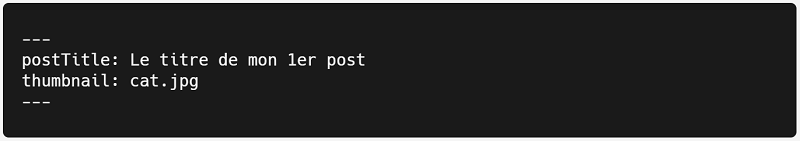
Enfin, ajoutez votre image dans le template post.njk :
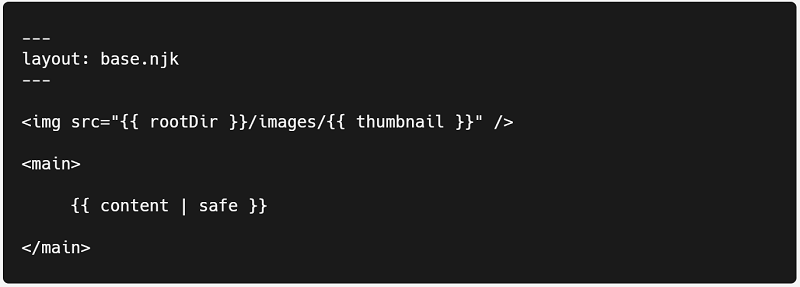
Le résultat :
Vous pouvez désormais avoir une image à la une dans tous vos articles, simplement en renseignant son nom dans le front matter. Pratique non ?
Et voilà ! Vous avez créé un blog !
Pour pousser un peu plus loin, consultez la documentation d'Eleventy. Et si vous avez des questions ou des suggestions au sujet de cet article, n'hésitez pas à me contacter !